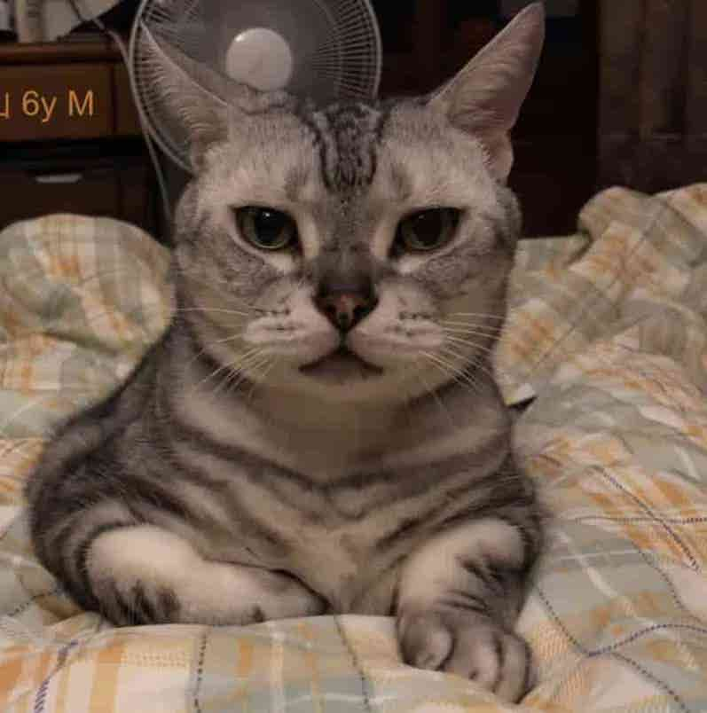

個案檔案室
十二封信，十二種說不出口的心情
每一篇都是真實發生過的動物溝通。點開信封讀完整封信，或者用下面的篩選，先看看貓、狗，還是兔子想說什麼。標示「故事準備中」的是已經預約進來、正在整理逐字紀錄的新個案，敬請期待。

偷偷走失後，家人幾乎每天都在附近巷子繞。連上線的那一刻，牠給出的畫面很安靜——濕濕的草地，一叢矮樹叢，牠趴在底下休息，不趕時間。
牠說自己在一個沒有河、離房子有段距離的地方，還給了一個像十字路口的畫面，說不清楚在哪，但那一帶對牠來說很陌生，也因此很安全，沒有其他貓會來搶地盤。
「我在想姊姊，也想去找姊姊散步。可以問問今天能不能不要回家嗎？我明天會回去。」
牠沒有害怕，也沒有受傷的感覺，只是還沒準備好結束這趟自己的小旅行。溝通不是導航，沒辦法給出精確的門牌，但常常能給照護人一件更重要的事：確認牠平安，然後知道要往哪個方向多留意。

"你會怪我那天沒有帶你去醫院嗎？"
「那天我沒有在想醫院。我在想你把手放在我背上，很久都沒有拿開。」
小貝生病的最後那段時間，主人反覆問自己同一件事。這是溝通當天她第一個提出的問題，聲音有點抖。
小貝的照護人只提了一個心願：希望牠知道，時間到了可以安心離開，不用為了誰硬撐。連線上的小貝很平靜，眼神柔和，說身體有點懶洋洋、睡得比較多，但不痛，暖暖的，很舒服。
牠說吃得下一點點就滿足了，剩下的力氣想留著，用來多看看這個家、多聽聽家人的聲音，記住屋子裡每一個小細節。
「打針最痛了，但我現在不用擔心那個了。我喜歡現在的溫度和環境，喜歡陪在他們身邊，我已經準備好了，謝謝收留我。」
牠也請家人放心——牠說變成靈體之後會很輕鬆，偶爾還是會回來看看。這場溝通沒有讓誰不再難過，但讓「放手」這件事，多了一點點的心安。

阿臉在外面生活了很久，是那一帶的老大，也是「擋在前面」的那一個。被接進家裡之後，牠吃得好、睡得好，卻每晚固定嘶吼、撞籠子，家人一度以為牠不喜歡這個家。
牠說不是不喜歡——是還放不下街上那群曾經一起取暖的孩子，沒有人在外面幫牠們擋了。牠也第一次說出，被關起來這件事，讓牠覺得自己出不去了、幫不上忙了。
「他們對我很好，會給我吃的、安撫我，但如果我住下來了，我就出不去了——我在外面已經很習慣了。」
這場溝通後來談的不是「牠愛不愛這個家」，而是牠需要被賦予一個「還有點自主權」的角色：知道自己在這裡不是被收編，而是被邀請。這對很多從街頭進入家庭的動物來說，是同一種心情。

珠珠是個對愛很敏感的孩子，連線上的瞬間就跑到跟前，問「你找我嗎」「你喜歡我哪裡可愛呢」。但這次牠的語氣裡，第一次出現了不安。
家裡新來了兩隻貓之後，牠突然覺得自己被要求「當大姊姊」——要包容、要禮讓、要負責照顧新來的。牠說自己空間變小了，也不確定自己還能不能像以前一樣，理直氣壯地當個小孩。
「不要叫我照顧他，把我們兩個當成同樣的年紀來看就好，我只想做我自己，我想撒嬌也想調皮。」
牠不是排斥新成員，是害怕自己在這個家裡的位置被重新分配、被縮小。後來照護人調整了互動方式，特別留出只屬於珠珠的專屬時間——這種「被單獨看見」的需求，在多貓多狗家庭裡，其實比想像中更常見。

Biron 是在西班牙街頭被救援、後來到德國落地生根的狗。第一次溝通時，牠對人類和大狗都帶著近似厭惡的警戒；兩年後家裡添了新生兒，照護人再次找上門，想知道牠這次會怎麼說。
牠已經不太一樣了。牠知道家裡多了一個「妹妹」，也知道媽媽那陣子很累，於是自己決定搬去妹妹房間陪睡——不是不愛媽媽了，是怕自己太吵，捨不得媽媽沒辦法好好休息。
「我常常有被拋棄的感覺，我怕我長得這麼醜，他們最後還是會選擇不要我……但每次看到媽咪來接我回去，我就超開心。」
Biron 的故事橫跨兩次溝通，是這裡少數的「長期個案」。牠讓人看到，動物的情緒不是靜止的——牠們也會在時間裡，慢慢學會安全感是什麼樣子。

3歲的 Killua，最讓照護人頭痛的是：不管憋多久，牠一定要等媽媽回家才肯尿尿，也因此常常在外過夜或托育時亂吠、漏尿，讓幫忙照顧的親友很困擾。
連線上的 Killua 說，牠一直都聽得懂媽媽的心情，只是不知道自己「應該」什麼時候尿尿——牠把「憋到媽媽回來」當成一種被誇獎的乖，也把大叫當成一種呼喚媽媽聲音的方式。
「我想等她回來帶我去尿尿啊，這樣我才會被誇讚是好孩子……大叫可以讓我聽到她的聲音，也能舒緩憋尿的不舒服。」
問題被重新翻譯之後，變得很不一樣：不是牠學不會、也不是牠故意搗蛋，而是牠把「等待媽媽」誤會成了乖巧的定義。照護人開始練習在離開前，明確告訴牠「可以自己尿尿」，情況也慢慢鬆動了。

咪咪很怕生，卻對熟悉的人充滿依戀，牠自己形容過那種矛盾：喜歡討摸摸，但太喜歡一個人之後，反而更害怕有一天看不到他，於是乾脆先躲起來。
搬到新家之後，牠最想念的是以前那個能自己待著看風景的窗邊角落，那是牠一個人也不無聊的地方。得知家裡客廳即將改成工作室、多一位常駐的人，牠先愣了一下，才慢慢問起「那我要幹嘛」。
「我太容易投入情感，太容易付出真心，但變化太大的時候會承受不住，所以會想念，但同時又顧及大家的心情，就焦慮了起來。」
這場溝通後來聊的重點，是幫咪咪找回一個屬於自己、能眺望遠方的小角落——環境可以變，但只要留一塊熟悉的地方給牠，牠的不安就會小很多。

奴比是隻安靜又甜美的女孩，牠的靈性很高，卻不太在意自己身體的疼痛——連線上牠第一句話說的不是「我不舒服」，而是家人有沒有因為牠而變得比較開心。
牠形容自己吃了一根細細長長的東西，睡了一覺醒來已經在醫院，看到家人來探望才安心。牠不害怕住院，只是體力不像以前，睡得多、躺得多，最想快點拿掉頭套，好好看清楚身邊的每個人。
「我想要他們多多抱我，即使我的身體不好，他們也不需要擔心，我是他們的乖孩子。」
整場溝通裡，奴比幾乎沒有替自己要求什麼，牠在意的始終是家人有沒有笑、有沒有安心。這種「先照顧別人的情緒，才想起自己」的姿態，在許多高齡動物的溝通裡，都能看到相似的溫柔。

丁丁聰明、帥氣，也很清楚自己想在這個家、這片街區當老大——牠對妹妹的食物被分走感到嫉妒，也習慣用打架來確立地位，每次打完都餓得想回家大吃一頓。
溝通裡，牠第一次聽到另一種當老大的方式：像獅子一樣，靠交朋友、分享愛來建立地盤，而不是靠武力。牠愣了一下，說自己從沒想過「當夥伴」也可以是一種力量。
「打架容易肚子餓，不過我現在手很有力，打架很強！但如果朋友變多，我的地盤也好管、也有勢力，這個主意我覺得不錯。」
丁丁最後也鬆口，願意把家裡的一樓分給妹妹住——牠不是不能分享，只是需要有人把「分享」翻譯成牠聽得懂、也覺得夠帥氣的方式。

Qbi 體態嬌小，個性秀氣又謹慎，走每一步路都像在計算會不會受傷。牠在意的不是不愛家人，而是自己太小了——大隻的狗、大聲的人類，光是被盯著看就會讓牠想躲起來。
牠也解釋了為什麼出門在外從來不尿尿：附近能尿的地方早就被其他狗佔領了，牠怕留下氣味惹禍上身，加上散步時常常被拉著走得太快，想尿也來不及。
「爸拔有點兇，講話聲音很大，碰撞的聲音很多，所以我會坐很遠，但我是愛他們的，只是容易害怕，我很膽小。」
牠提出了一個具體的請求：希望家人蹲下來、用溫柔的手掌邀請牠，而不是居高臨下地叫牠過去。一個小小的姿勢調整，往往比一百次呼喚更有用。

Cony 覺得自己一點都沒有「亂」尿尿——牠只是選了自己喜歡、有自己氣味的地方。牠抱怨過指定的地點地板冰冰的，又硬又滑，蹲下去很不舒服，加上碗放得太高，吃東西很費力。
牠也在意「被稱讚可愛」這件事，一旦覺得家人比較常說別的兔子可愛，情緒就會明顯低落——兔子雖然沒有表情，內心其實很澎湃。
「我喜歡自己的味道啊！廁所那裡我的味道好少，我想要有多一點自己的空間。」
兔子是極度討厭麻煩、又很有主見的小生物。後來照護人試著把「亂尿」的地方擦乾淨、沾一點牠的尿引導到指定位置，並調整了碗的高度，狀況也慢慢穩定下來。

Mio 是隻聰明又愛玩的小貓，牠對「偷尿尿」這件事的解釋，跟大家猜的完全不一樣：牠不是在報復，只是單純喜歡布料柔軟的觸感，而貓砂盆裡的顆粒踩起來普通，有時候還會卡進腳趾縫，不太舒服。
牠也很有地盤意識，一聽到「這樣衣服會被人家嫌棄」，立刻炸毛：「誰敢欺負我 Mio 的東西？不可以！」——牠在意的其實是自己的所有物有沒有被尊重。
「布的感覺比較舒服，摸起來爽爽的，貓盆偶爾會進去一下，但手感普通。」
後來照護人換了幾種不同材質的貓砂，讓 Mio 自己選出喜歡的觸感，問題很快就解決了。很多被解讀成「情緒性行為」的小狀況，答案其實藏在最基本的身體感受裡。

- 毛孩說的話
- 照護者說的話
- 溝通師說的話
飯飯是白底虎斑的女生，第一次溝通時七個月大。照護者問的是最普通的四個問題：喜歡吃什麼、被撿到之前過得怎麼樣、還想不想有貓咪作伴、有沒有什麼想跟我們說的。答案卻一路歪出預期。
「喜歡果凍感的肉。可是我不知道不同的肉有什麼差別耶？有時候好吃，有時候腥味比較重。脆脆的咬起來也很好吃——不過我都用吞的喔。」
「早上起床想吃多一點。但也不要給我太多，因為我怕胖。我在外面看過成年的胖貓，感覺很兇。我不想變兇，這樣會被討厭。」
七個月大。她已經在計算，怎樣的自己會被喜歡。
問到被撿到之前的生活，她說印象不深了。
「藍天白雲，一條乾涸的水溝旁邊。幾隻顏色跟我不一樣的小貓，還有一隻棕色的、邊邊白白的大貓。」
「現在只有我跟媽媽。我有自己的大床，還有朋友。我很開心。」
動物講到不舒服的記憶時，常常會自己把畫面停在一個安全的地方。收容所那一段，飯飯沒有多說——不是不記得，是選擇不看。
被問到「有什麼想跟我們說的」，她提的是一個很小的要求。
「離開家，如果天黑以後才回來，可以開一盞小燈嗎？再放一個有你味道的東西，讓我可以窩進去。這樣我會比較安心，因為我的朋友很久才來一次。」
「我醒來發呆的時候，如果有一個地方可以讓我聞著你的氣味、等你回家，就更好了。」
兩週後的電話對答案，照護者又追加了兩個問題。第一個是：
「飯飯最近很少打呼嚕，是為什麼？」
「我有呼嚕嚕啊。怎麼可能不呼嚕嚕？沒有呼嚕嚕不是很奇怪嗎？」
「不過……最近的確有重重的感覺。空氣重重的，眼皮很容易掉下來。最近媽媽都會陪我玩得很瘋。」
我問她，那家裡放一點香香的味道給妳聞，會不會比較舒服？
「那是什麼味道？我沒聞過，我不知道。……像媽媽的手一樣的味道嗎？」
「香香的味道。粉粉的味道。」
第二個問題，是這次溝通真正的轉折。
「飯飯最近很愛講話，是在表達什麼？」
「你看我最近的毛，是不是很漂亮啊？」
「你們大部分問我的是『餓了嗎』『想玩嗎』。你們好像沒有聽懂我的意思——我想要聽到的是：要誇讚我很漂亮、很可愛啊！」
她喵喵叫的時候，要的不是罐頭，是誇獎。有些誤會不是不愛，是頻道對錯了。
另註：若毛孩突然改變作息、食慾或叫聲頻率，仍建議先安排獸醫檢查，排除生理因素後再從溝通面調整。
飯飯是這裡少數「原本沒有問題要解決」的個案。照護者只是想認識她。而她想被認識的方式，是被誇一句漂亮。

- 毛孩說的話
- 照護者說的話
- 溝通師說的話
麵麵是飯飯家的二貓。2022 年 8 月我第一次到府時，她還在非常怕生的階段，照護者正在進行隔籠親訓——已經第七個月了。餵零食肉泥都會被哈氣。所有人都下了同一個結論：她個性就是這樣，就是派，就是不親人。
那天回家的路上我一直唸著這件事。當晚還是傳了訊息過去。
「忘了跟妳們說，可以每天看著麵麵的眼睛說『我愛你』，給她療癒的能量。邊摸她，也可以在心裡傳遞愛的訊息，多多想像從手心散發出翠綠色寶石的療癒之光給她。」
「愛的能量可以補充她現在缺乏的精力，也有助於讓她瞭解妳們的心意。趁這個機會，建立起彼此之間愛的溝通管道。」
說明：療癒之光是給照護者的日常練習，作用在關係與陪伴品質。麵麵當時的傷口照護與復原，全程仍由獸醫負責，溝通不取代任何醫療處置。
「真暖。真好。」
「收到了。」
照護者當晚睡前，好好地把那些話傳達給了麵麵。然後是隔天早上。
「我要跟你講超神奇的事——麵麵居然好像了解了我們心意一樣，開始跟我大撒嬌耶。」
「完全完全沒有意料到，他是會對人類撒嬌的貓。我還錄影要給你們看。」
而在她們一起看那支影片的同時，我收到了麵麵的一句話。
「我現在才知道，原來妳是愛我的。」
照護者後來傳了一段很長的訊息過來。我讀了很久。
「厚，我真的被暖哭。然後深深反省自己。因為我們都超重視飯飯的感受，都以不想飯飯受傷為主。而且我們親訓了七個月，麵都還很派，就覺得她個性就是這樣——她連我們餵零食肉泥都會哈氣，更不可能親人。」
「薩摩白一講，我真的徹底覺悟：完全沒講過愛她啊……都忘了她這個小生命需要我們的愛。」
「被她撒嬌萌到，又超心疼她這樣誤會這麼久。」
七個月的隔籠親訓，麵麵一直以為那只是規矩。她不知道那是愛。
多貓家庭最常見的傷，不是偏心，是「我以為她不需要」。當家裡有一隻比較敏感、比較需要保護的孩子，另一隻往往會被歸類成「她比較沒事」——然後那句該說的話，就一直沒有說出口。
飯飯教這個家「聽」：她喵喵叫的時候，不一定是餓。麵麵教這個家「說」：她等的不是罐頭，是一句從來沒有人對她說出口的話。
「在你們昨天踏進來以前，所有來過、見過麵的朋友，一定都無法相信這一幕。」
